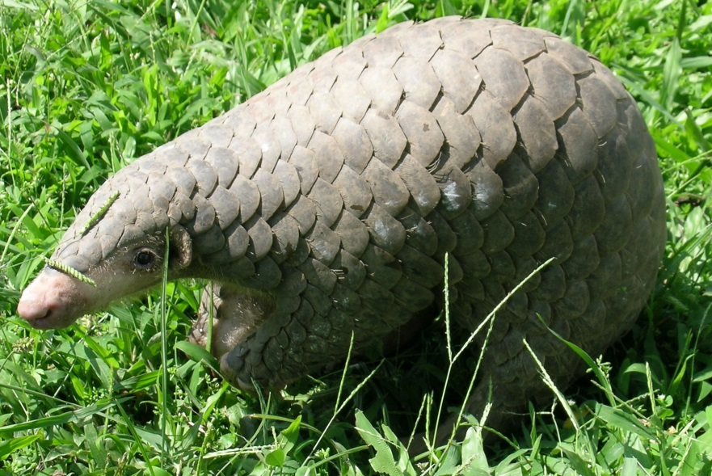
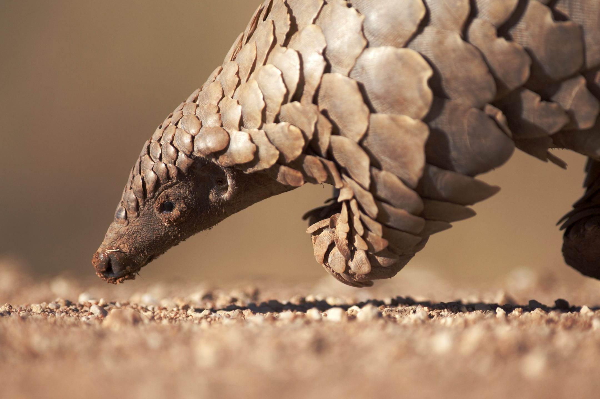
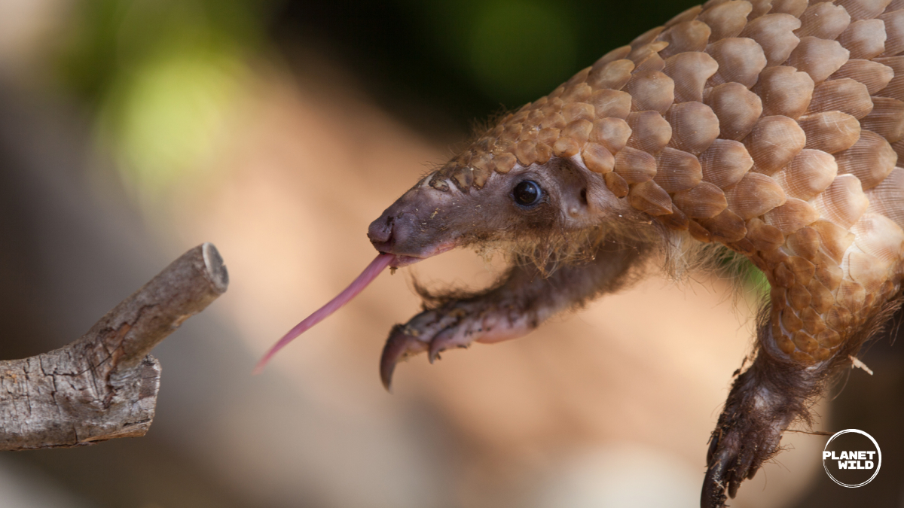
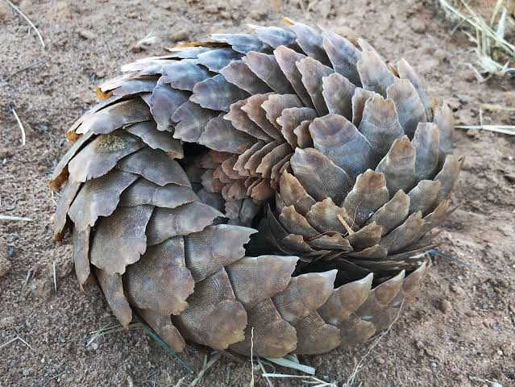
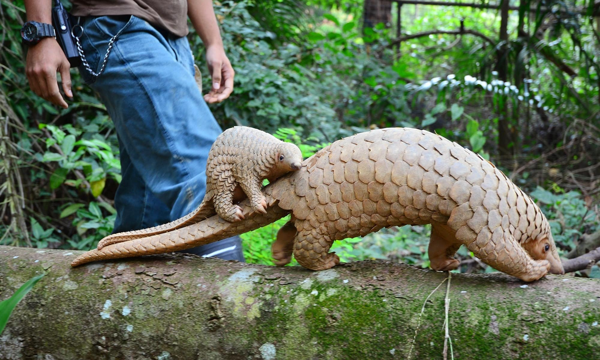

Descubra tudo sobre o mamífero mais escamoso e incrível do mundo!

O pangolim chinês é um mamífero muito especial que vive na Ásia. Ele é coberto por escamas duras feitas de queratina — o mesmo material das nossas unhas! É o único mamífero do mundo que tem escamas.
Seu nome científico é Manis pentadactyla, que significa "escamoso com cinco dedos". Os pangolins são animais tímidos e noturnos — ficam mais ativos durante a noite. Apesar de parecerem répteis, são mamíferos de sangue quente que amamentam seus filhotes!

O pangolim chinês tem cerca de 40 a 60 cm de corpo e uma cauda de tamanho parecido. Pesa entre 3 e 8 kg. Suas escamas cinza-azuladas ficam em 18 fileiras sobrepostas por todo o corpo.
Tem um focinho comprido e estreito, olhos pequenos e uma língua enorme — que pode ser tão comprida quanto seu próprio corpo! A língua é grudenta e perfeita para capturar insetos. Suas patas têm garras longas e fortes para cavar.
O pangolim chinês vive no sul e leste da Ásia, em países como China, Índia, Nepal, Mianmar, Vietnã e Tailândia. Ele gosta de florestas tropicais, florestas de bambu, campos e até áreas de cultivo agrícola.
Durante o dia, dorme em tocas profundas que cava com suas garras poderosas — podem ter até 2 metros de profundidade! Ele também sabe escalar árvores usando a cauda como apoio.
O pangolim chinês é insetívoro — come apenas insetos! Seus favoritos são formigas e cupins. Com suas garras poderosas, abre formigueiros e cupinzeiros e usa sua língua longa e grudenta para capturá-los.
Um pangolim adulto pode comer até 70 milhões de insetos por ano! Isso ajuda a controlar a população de formigas e cupins na natureza. Como não tem dentes, engole pedrinhas que ajudam a triturar a comida no estômago — parecido com as galinhas!

Quando se sente ameaçado, o pangolim se enrola como uma bola, protegendo a barriga macia com suas escamas duras. Nessa posição, nem um leão consegue abri-lo! As escamas são afiadas nas bordas e podem cortar um predador.
O nome "pangolim" vem da palavra malaia "pengguling", que significa "aquele que se enrola". Infelizmente, essa defesa funciona contra animais, mas não protege contra humanos.

A mamãe pangolim tem apenas um filhote por vez. O bebê nasce com escamas macias que endurecem depois de alguns dias. A partir de cerca de um mês de vida, o filhote começa a andar nas costas da mãe, agarrado à base da cauda!
O pai pangolim ajuda a cuidar do filhote, ficando com a família até que o bebê seja desmamado, por volta dos 3 a 4 meses de idade.

O pangolim chinês é o mamífero mais traficado do mundo e está criticamente ameaçado de extinção. A população caiu mais de 80% nas últimas décadas.
A língua pode medir até 40 cm — mais comprida que o corpo!
Não tem nenhum dente! Engole a comida inteira.
Quando anda nas patas traseiras, parece um pequeno dinossauro!
Tem visão muito fraca, mas um olfato excelente!
Come até 200.000 formigas em uma única noite!
Existem 8 espécies de pangolim: 4 na Ásia e 4 na África.
Tem um dia só dele: o Dia Mundial do Pangolim, no 3º sábado de fevereiro!
As escamas representam 20% do peso total do animal.
Você prestou atenção? Responda o quiz e descubra!
Clique em uma foto para ver em tamanho grande!